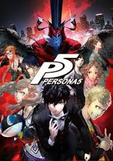

Inleiding
Deze pagina gaat over mijn lievelings game, Persona 5. Dit spel is een RPG gemaakt door atlus en het duurt ongeveer 100 uur als je het een keer uit wil spelen.
Het grootste gedeelte van deze game ben je het verhaal langs aan het gaan of zelf dingen aan het doen.
Ook zijn er veel karakters maar je speelt als 1 bepaald karakter ganaamd Joker. Dit is een stil persoon en vooral de mensen om je heen praten.